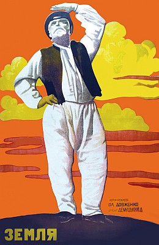
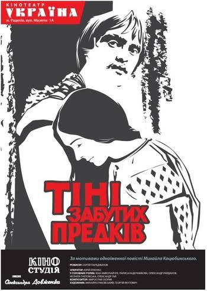
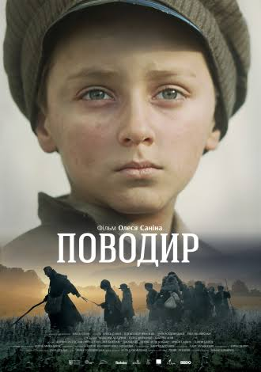
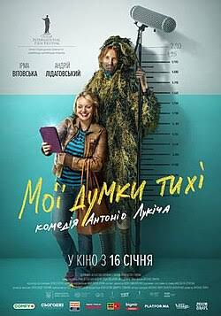
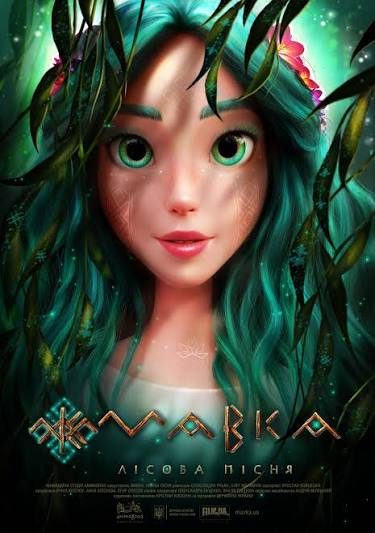
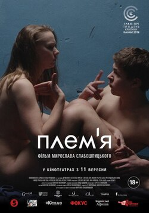

Земля
1930 рік
Відомий фільм Олександра Довженка про колективізацію та конфлікт поколінь.
ДетальнішеВідкрийте найкращі українські фільми та видатних режисерів.
Дослідити фільмиУкраїнське кіно має багату історію, що охоплює понад століття. Воно пройшло складний шлях від авангарду 1920-х років і поетичного кіно до сучасного європейського кінематографа.
Українські режисери створили відомі у світі шедеври, які сформували унікальну візуальну культуру. Сьогодні вітчизняні стрічки активно завойовують нагороди на міжнародних фестивалях та знаходять відгук у серцях глядачів.
Перші кіносеанси у Харкові та Києві, початок кінозйомок в Україні.
Вихід на екрани легендарного фільму «Земля» Олександра Довженка.
Прем'єра стрічки Сергія Параджанова «Тіні забутих предків», що започаткувала українське поетичне кіно.
Анімаційний блокбастер «Мавка. Лісова пісня» встановлює рекорди касових зборів в Україні та за кордоном.

1930 рік
Відомий фільм Олександра Довженка про колективізацію та конфлікт поколінь.
Детальніше
1965 рік
Шедевр Сергія Параджанова за повістю Михайла Коцюбинського.
Детальніше
2014 рік
Драматична історія американського хлопчика та сліпого кобзаря в радянській Україні.
Детальніше
2019 рік
Трагікомедія Антоніо Лукіча про звукорежисера та його маму на Закарпатті.
Детальніше
2023 рік
Сучасний анімаційний фільм за мотивами драми-феерії Лесі Українки.
Детальніше
2014 рік
Унікальна кримінальна драма Мирослава Слабошпицького мовою жестів без слів.
ДетальнішеКласик світового кінематографа, письменник, основоположник українського поетичного кіно.
Видатні роботи: «Земля» (1930), «Звенигора» (1928).
Геніальний режисер і сценарист, чий візуальний стиль змінив світове мистецтво.
Видатні роботи: «Тіні забутих предків» (1965), «Колір граната» (1969).
Яскравий представник нового покоління українських режисерів, майстер тонкої іронії та драми.
Видатні роботи: «Мої думки тихі» (2019), «Люксембург, Люксембург» (2022).
Особливе місце серед українських стрічок займає фільм «Мої думки тихі». Це зворушлива і водночас надзвичайно смішна історія про стосунки сина та матері, яка чудово передає атмосферу сучасного українського життя, сповнена щирих емоцій та тонкого гумору.